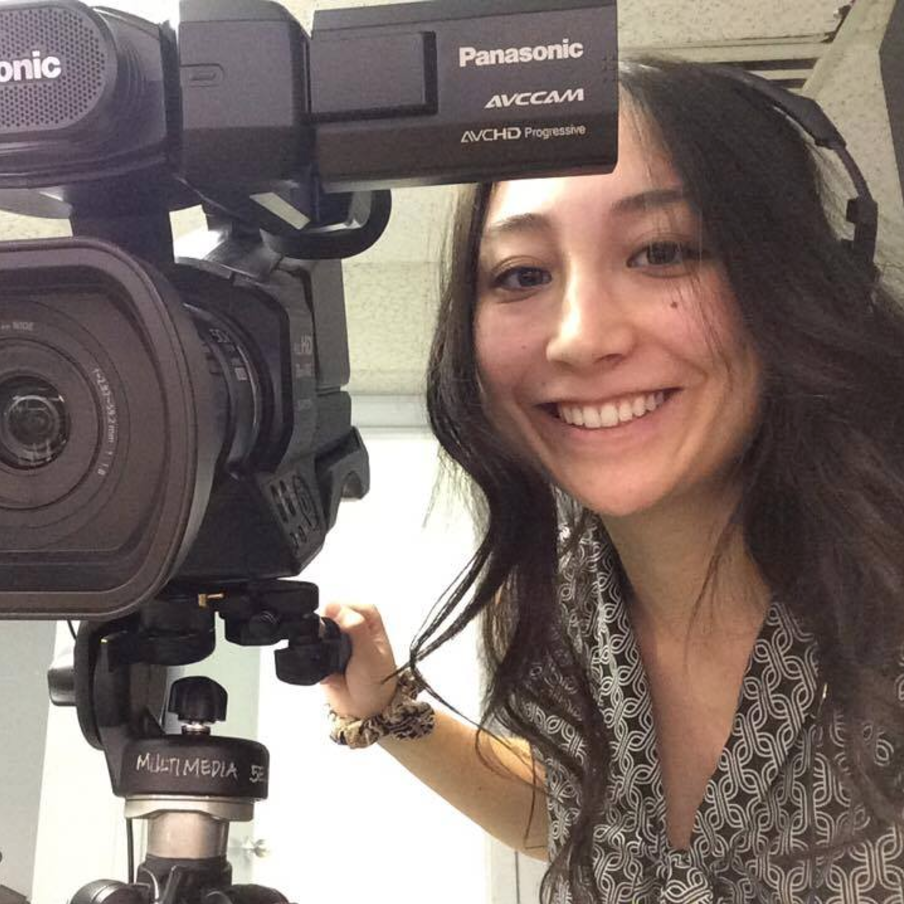

Kindergarten Elementary Education
Olivia Lusterio-Adler
A little about me
My name is Miss Ollie. I’m in my second year in Kindergarten and Elementary Education. I see myself teaching science, English language arts, media and technology, and math. I see myself continuing my education either to become an educational psychologist who can test and diagnose children with learning disabilities, to go to philosophical dialogue training and hold my own discussions in class.What brought me to education: As a child, I had to work super hard for my mark and to learn. I wanted to become a teacher to help the students who may fall between the cracks, who may have a slight to severe learning disability. I also chose teaching because I like helping others, teaching, sharing, creating, and playing.
However, the one moment that made me realize that I want to help people was when I was in Cegep as a para-technician working at Dawson in Cinema/Communications as part of the Creative Arts Language and Literature. I would be paid through the school to stay after hours in the Mac computer labs to help students with technical and brain storming questions regarding their projects. One day, a student came in. He was different than many other students. He would speak very slowly, be enthusiastic but the way with which he would express his ideas would come across as incoherent. When we would suggest to him ideas, he would say he understood but his actions showed otherwise. When he came into my lab, I helped him edit his video. He would verbalize to me what he wanted to do and I would model to him how to do it using Final Cut 10. It took time, patience. We finished the project and he was so grateful. This experience made me feel as though I have a positive impact helping others create and learn.
Skills and interests
Some of my skills include
- Creating Media (Photoshop, Final Cut X, Adobe Premier)
- Stop motion films
- Creative technology projects
- Origami Art, bamboo sculptures
- I can play soccer, hockey, do track, badminton, and speed skating!
- Philosophy for Children (P4C) through Brila Summer Camp
- Educational psychology
- Learning disabilities
- American Sign Language
- Survival planning
- First Aid
- Environmentally friendly ways of living
- Playing and coaching sports (soccer, hockey, track and field, badminton, speed skating)
- Strategy games: chess
- Apps
- Gamification
- Classroom management
- How to develop character and grit
- Taylor Adolescent Program (TAP)
- Natural Science Teacher
- Resource Room
- Guidance Office
- Media and Tech teacher
- Collaborative class projects + Brain storming activities
- Learning through movement and play